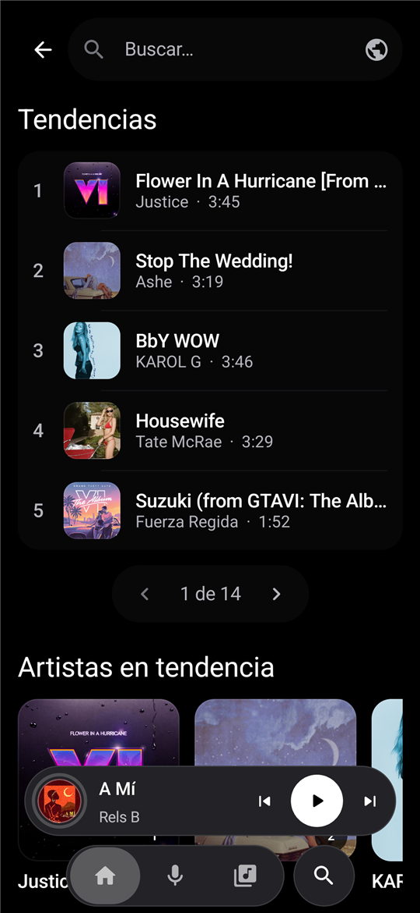
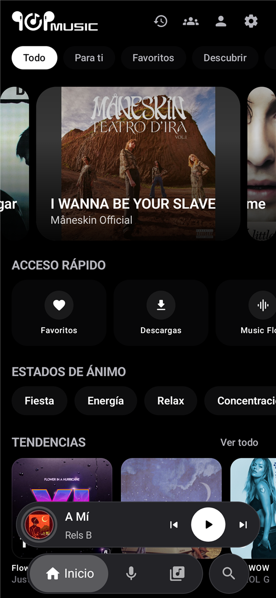
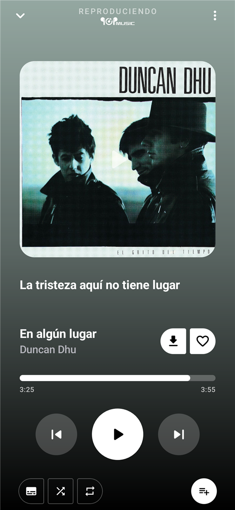

Reproducción directa con Media3 y el extractor de NewPipe: sin interrupciones y con cola completa, aleatorio y crossfade.
TU EXPERIENCIA MUSICAL · V0.1.0
Tu música.
Tu espacio.
Tu ritmo.
PoPMusic es una app de música para Android con streaming sin anuncios, letras sincronizadas, descargas offline y salas para escuchar con amigos en tiempo real. Todo en un solo lugar.
◆ Android 15 o superior · APK firmado · 18,9 MB



UNA NUEVA FORMA DE VIVIR TU MÚSICA
01 / CONOCE POPMUSIC
Todo empieza
con la música.
PoPMusic es nuestro proyecto de música para Android: una app hecha con Kotlin y Jetpack Compose, pensada para gente que solo quiere abrir y escuchar. Sin anuncios, sin rastreo y sin cuentas obligatorias: tu biblioteca vive en tu teléfono.
- Sin anuncios nunca, en ninguna pantalla.
- Sin rastreo: no vendemos ni compartimos tus datos.
- Gratis y libre: código abierto en GitHub.
02 / EN TU CELULARCAPTURAS REALES · SAMSUNG GALAXY A34
Así se ve
PoPMusic.
Trece pantallas reales de la app, tal como se ven en un celular.
03 / HECHA PARA TIPOP MUSIC EXPERIENCE
Menos complicaciones.
Más música.
Todo lo que hace especial a PoPMusic, disponible desde la primera vez que la abres.
Letras en tiempo real con la línea activa resaltada, cuatro estilos de letra y la ficha del artista al alcance.
Descarga tus canciones y escúchalas sin datos: funciona en modo avión y se administra desde Ajustes.
Crea una sala, comparte el código y cualquiera puede pausar, saltar o añadir canciones a la cola compartida.
Top 50 mundial y de tu país al día, más reconocimiento de música y chips de ánimo para descubrir.
Fondos dinámicos con los colores de la portada, cristal líquido, crossfade, ecualizador y temporizador de sueño.
Pega un enlace de YouTube o Spotify y trae tus listas completas a tu biblioteca en segundos.
Vincula YouTube o Spotify: importa playlists, sube tus listas y elige qué se sincroniza en cada una.
Elige tus géneros y artistas favoritos para que el inicio y las sugerencias se adapten a ti.
Inicia sesión con Google y consulta tus playlists, favoritos, descargas y actividad desde tu cuenta.
0anuncios, siempre
0o superior
0archivo APK
0gratis y sin rastreo
04 / EMPIEZA A ESCUCHAR
La música te
está esperando.
Descarga la APK oficial de PoPMusic para Android. Archivo firmado, sin tiendas de por medio: tocas y se instala.
- 1 Toca “Descargar APK” y espera a que termine el archivo.
- 2 Ábrelo en tu celular y acepta instalar de orígenes desconocidos.
- 3 Abre PoPMusic: tu biblioteca y tu sesión se guardan en el dispositivo.
¿Prefieres GitHub? La misma APK está en Releases ↗